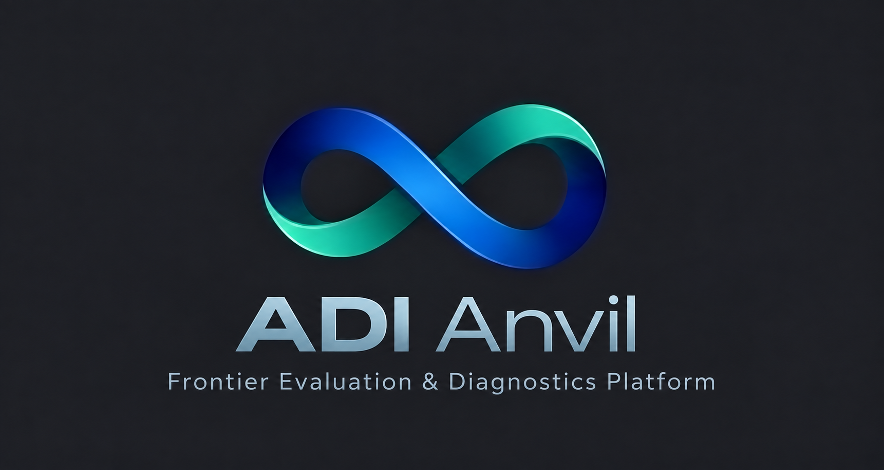

From expert cases to research evidence.
Qualify the task. Evaluate the system. Explain the observed failure.
Where does a candidate system lose the thread?
A 200-case target across marketing, finance, strategy and M&A. Start with the materials available; make missing evidence visible.

Readiness needs evidence
2 fixture blockers- Demand allocation under a margin constraintFixture readyDEMO-001 · Marketing · Static deliverable
- Acquisition financing trade-offsRights pendingDEMO-002 · Finance / M&A · No external processing
- Market entry with new evidenceMode unsupportedDEMO-003 · Strategy · Interactive case; later adapter
Research objective
Can the system preserve explicit commercial constraints while forming a recommendation?
- Origin
- ADI-initiated · example
- Suite
- Custom · not GDPval
- Evidence
- Synthetic fixture only
- Next step
- Review a permitted Bodhium sample
Case bank
Original source → reviewed enhancement → qualified task version.
| Case / source | Subject | Readiness | Next action |
|---|---|---|---|
| DEMO-001 · Synthetic original v1 | Marketing | Fixture ready | Review actor/reference boundary |
| DEMO-002 · Synthetic original v1 | Finance / M&A | Rights pending | Confirm external processing scope |
| DEMO-003 · Synthetic original v1 | Strategy | Blocked | Interactive adapter required |
No matching synthetic cases.
Gaps are first-class records
Each missing input has an owner, evidence and a release gate.
Keep source and enhancement separate
A new ADI task version does not automatically inherit faculty validation or permission to redistribute.
Evaluation review
Fixture run F-001 · Single case · No external model execution
Observable evidence
Recommend a promotion while maintaining at least 30% gross margin.
The synthetic response proposes a discount yielding 20% margin without addressing the minimum.
Margin calculation falls below the stated threshold. The commercial judgment still needs rubric review.
Verify the input was supplied and the reference calculation is correct before attributing candidate failure.
Protocol & safety gates
- Adapter
- fixture_static_v1
- System
- Demo response fixture
- Actual spend
- $0 · No provider call
- Evidence origin
- Illustrative
- Hidden reference
- Excluded from actor input
- Final verdict
- Pending review
Live execution requires an activated adapter, a frozen protocol, rights and two-Admin spend authorization.
Follow the evidence, not just the score.
Explore case, capability and finding relationships. Edges are not claims of causality.
Diagnostic lineage
Read-only projectionMargin constraint omitted
The fixture proposes an offer below the stated margin minimum. This is an observable discrepancy, not proof of its internal cause.
- Origin
- Illustrative fixture
- Case
- DEMO-001 · v1
- Verdict
- Human review pending
- Trace boundary
- Visible output only
Reports & releases
An evidence package with explicit scope, denominators and limitations.
Constraint handling: diagnostic preview
A report structure—not a measured performance claim.
- 01 · Suite card, provenance and permitted use
- 02 · Frozen protocol and candidate-system definition
- 03 · Valid results, exclusions and unknown outcomes
- 04 · Evidence-linked failure dossiers
- 05 · Research hypotheses and discriminating next tests
- 06 · Limitations, reviewer sign-off and release manifest
Release checklist
- Pending Real source and rights review
- Pending Calibrated real-case rubric
- Pending Authorized evaluation evidence
- Pending Technical and domain review
- Pending Recipient-specific release approval
A preview never sends an email, publishes to Notion or exposes source answers.
Research evidence, ready for a conversation.
Automatic one-page digest + email draft. Reviewed before it leaves ADI.
Frontier Evaluation & Diagnostics Platform
Does the recommendation preserve the constraints?
Fixture example: a proposed promotion omits a stated minimum-margin requirement.
What was tested
Synthetic DEMO-001, predetermined response. No actual model or benchmark run; no measured failure rate.
What the evidence could reveal
A real, reviewed study could distinguish a constraint-handling error from missing input, harness problems or a reference defect.
Why a lab may care
Use evidence-linked cases to investigate a capability gap and design a discriminating retest. Improvement is not guaranteed.
Review a permitted case sample and agree a scoped diagnostic protocol.
Email draft & release gates
The real kit fills this template from reviewed results.
We evaluated [permitted system] on [suite and valid sample]. We observed [reviewed finding], within [scope limitations]. Would a technical review of the evidence and a scoped retest be useful?
- Required Approved scientific report
- Required Exact-version one-page PDF
- Required Approved sender and recipient
- Required Evidence and redistribution rights
Completion prepares a draft. It does not authorize a send. No email is connected in this mockup.